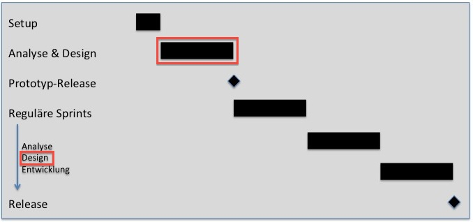

The scenario design relies on three artefacts:
-
The Logical Data Model describes the internal structure of each dimension and
the interaction between dimensions and cubes.
-
The Measure Catalogue gives an overview over all measures and defined their
properties; in particular, there is a description of the context of each measure. This leads to
the relation between measures and dimensions and to relation between measures and cubes.
-
For each information object a Specification is given, which shows
measures will be presented together with which dimension attributes, which filters are used
and which table or diagram type is used for presentation.